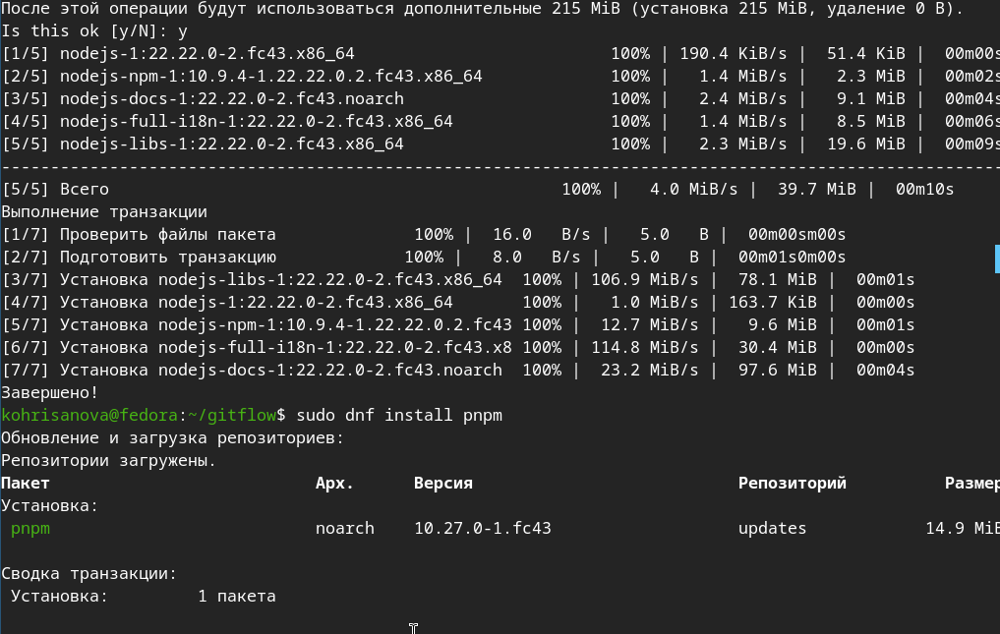
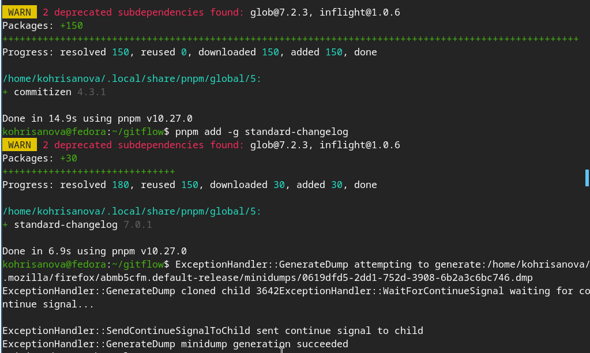
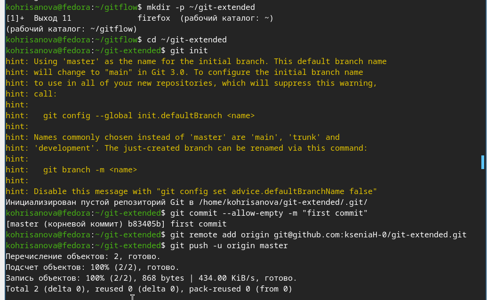
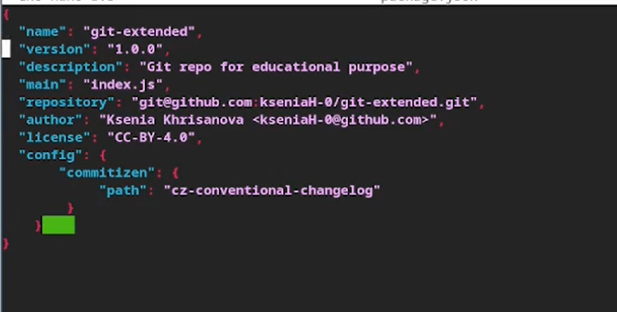
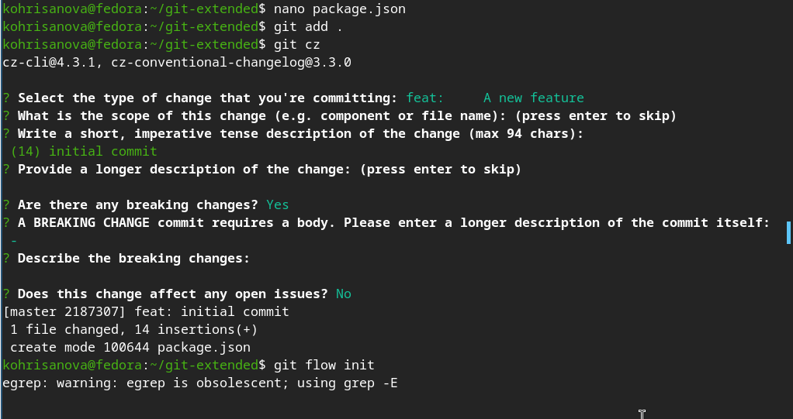
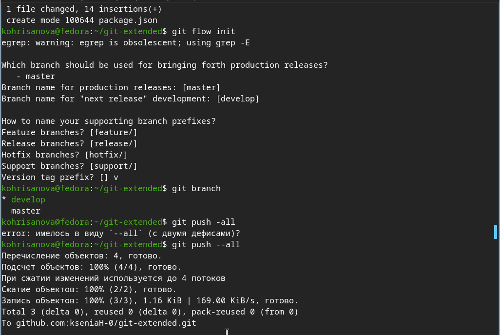
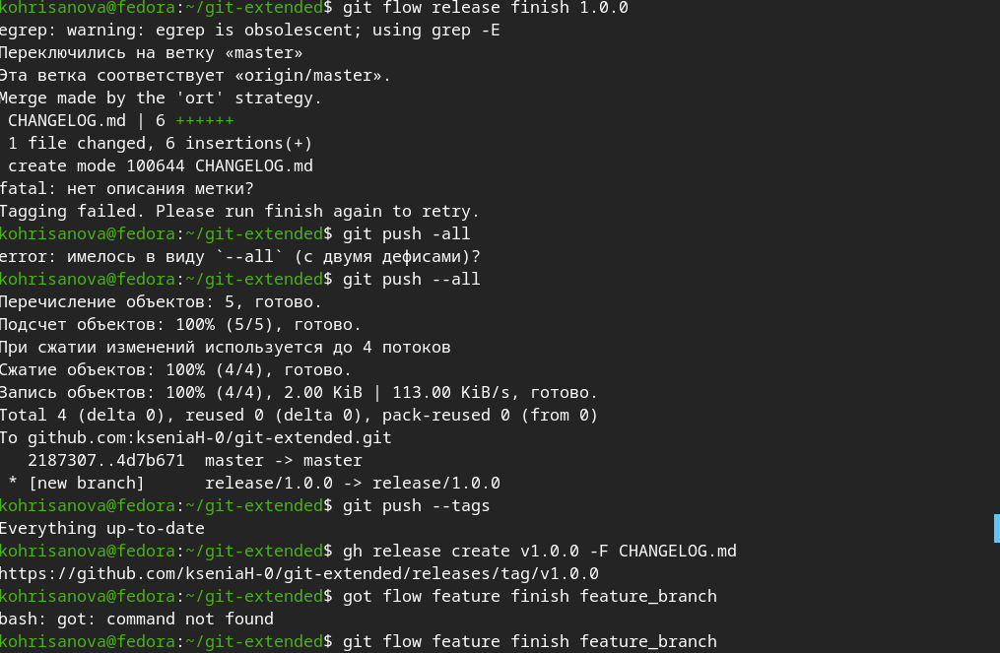
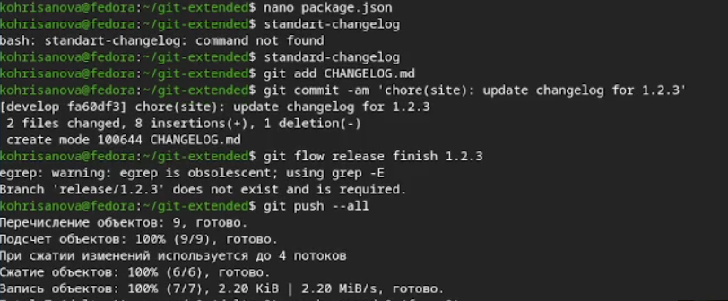

Получение навыков продвинутой работы с репозиториями git и
релизами.
Задание
Выполнить работу для тестового репозитория.
Преобразовать рабочий репозиторий в репозиторий с git-flow и
conventional commits.
Выполнение лабораторной
работы
Устанавливаю
nodejs, пакетный менеджер для него pnpm и gitflow.

Установка необходимого ПО
Устаналиваю
через pnpm commitizen и standard-changelog.

Установка через pnpm
Создаю
новый репозиторий и делаю там первый коммит.

Создание репозитория
Инициализирую
и конфигурирую общепринятые коммиты в созданной директории через
редактирование package.json.

Конфигурация package.json
Делаю
снимок измененний, создаю коммит и отправляю на удаленный
репозиторий.

Отправление коммита на
GitHub
Инициализирую
в репозитории git flow и создаю 1 релиз в только что созданной ветке
develop.

Использование git-flow
Создаю
список изменений через standard changelog, заканчиваю релиз и выгружаю
на удаленный репозиторий изменения.

Загрузка релиза на github
Инициализирую
ветку feature для работы над новой функциональностью, готовлю релиз и
загружаю на github.

Работа с новой веткой и загрузка
релиза
Выводы
В ходе работы освоена работа с Gitflow, семантическим
версионированием и Conventional Commits. Созданы feature-ветки, релизы и
сгенерирован changelog. Полученные навыки позволяют вести
структурированную разработку и автоматизировать выпуск версий
проекта.